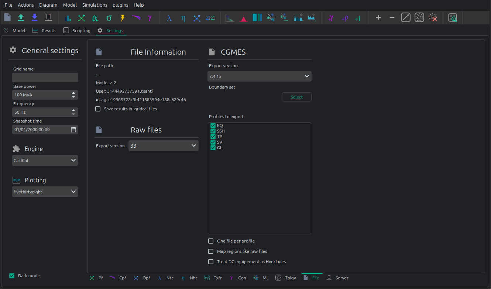

💾 File loading and saving
To load a grid, just drag & drop the file (or files) into the user interface. Alternatively, use the open dialogue and select the file or files. You may be presented with a logs dialogue, and in the case of CGMES a new window showing the CGMES information. Regardless of the file format, whenever you load a file into VeraGrid it gets converted to the native internal object structures (MultiCircuit). From there you may further edit or export in any of the supported formats.
VeraGrid supports a great deal of file formats.
read |
write |
|
|---|---|---|
VeraGrid |
✅ |
✅ |
Json |
✅ |
✅ |
CIM 16 |
✅ |
✅ |
CGMES 2.4.15 |
✅ |
✅ |
CGMES 3.0 |
✅ |
✅ |
raw/rawx (PSS/e) |
✅ |
✅ |
dgs (PowerFactory) |
✅ |
✅ |
ucte (UCTE) |
✅ |
✅ |
m (Matpower) |
✅ |
✅ |
p (PandaPower)* |
✅ |
|
nc (PyPSA)* |
✅ |
|
epc (PSLF) |
✅ |
|
Power grid models |
✅ |
Compatibility caveat
Install the PandaPower package to load the
.pformat since it is an optional dependency.pip install pandapowerInstall the PyPSA package to load the
.ncformat since it is an optional dependency.pip install pypsa
The other supported formats are handled natively.
Some additional file settings are found at the Settings>File tab:

These are specially relevant for CGMES and raw/rawx formats.
API
Loading a grid
import VeraGridEngine as gce
# load a grid (.veragrid, .m (Matpower), .raw (PSS/e) .rawx (PSS/e), .epc (PSLF), .dgs (PowerFactory)
my_grid = gce.open_file("my_file.veragrid")
In the case of CIM/CGMES, you may need to pass a list of files or a single zip file:
import VeraGridEngine as gce
# load a grid from many xml files
my_grid = gce.open_file(["grid_EQ.xml", "grid_TP.xml", "grid_SV.xml", ])
# or from a single zip assumed to contain CGMES files
my_grid = gce.open_file("my_cgmes_set_of_files.zip")
# or load a grid from a combination of xml and zip files assumed to be CGMES
my_grid = gce.open_file(["grid_EQ.xml", "grid_TP.xml", "grid_SV.xml", "boundary.zip"])
If you need to explore the CGMEs assets before conversion, you’ll need to dive deeper in the API:
import VeraGridEngine as gce
fname = "tests/data/grids/CGMES_2_4_15/IEEE 118 Bus v2.zip"
logger = gce.Logger()
data_parser = gce.CgmesDataParser()
data_parser.load_files(files=[fname])
cgmes_circuit = gce.CgmesCircuit(cgmes_version=data_parser.cgmes_version,
cgmes_map_areas_like_raw=False, logger=logger)
cgmes_circuit.parse_files(data_parser=data_parser)
# print all the ac line segment names
for ac_line_segment in cgmes_circuit.cgmes_assets.ACLineSegment_list:
print(ac_line_segment.name)
# print the logs
logger.print()
VeraGrid supports many file formats:
CIM 16 (.zip and .xml)
UCTE.
CGMES 2.4.15 and 3.0 (.zip and .xml)
PSS/e raw and rawx versions 29 to 35, including USA market exchange RAW-30 specifics.
Matpower .m files directly.
DigSilent .DGS (not fully compatible)
PSLF .EPC (not fully compatible, supports substation coordinates)
Similarly to CGMES you may be able to use the conversion objects to explore the original formats.
Save a grid
import VeraGridEngine as gce
# load a grid
my_grid = gce.open_file("my_file.veragrid")
# save
gce.save_file(my_grid, "my_file_2.veragrid")
In the case of saving a model in CGMES mode, we need to specify some extra parameters.
To simplify we can use the API function save_cgmes_file:
import VeraGridEngine as gce
# load a grid
my_grid = gce.open_file("my_file.veragrid")
# run power flow (this is optional and it is used to generate the SV profile)
pf_results = gce.power_flow(my_grid)
# save the grid in CGMES mode
gce.save_cgmes_file(grid=my_grid,
filename="My_cgmes_model.zip",
cgmes_boundary_set_path="path_to_the_boundary_set.zip",
cgmes_version=gce.CGMESVersions.v2_4_15,
pf_results=pf_results)
Conversion assumptions
All non-native formats are converted through VeraGrid’s internal MultiCircuit model.
This means that every import and export carries some format assumptions.
For the formats that support profile-aware export, the same rule is used everywhere:
t_idx=Noneexports the snapshot values.t_idx=0,t_idx=1, … export one specific profile point.BatchZipexports one independent file per time step inside a zip package.
The most important consequence of the conversion architecture is this:
when you load a foreign file, you do not keep a live foreign-format object as your working model;
when you save to another foreign format, VeraGrid exports from
MultiCircuit, not from the original file text;therefore, a roundtrip is usually electrical and structural, not textual.
PSS/e RAW and RAWX
Import assumptions
PSS/e RAW and RAWX are the least lossy steady-state exchange formats currently supported by VeraGrid. Still, the imported model is normalized into VeraGrid concepts:
buses, loads, fixed shunts, switched shunts, generators, transformers, branches, switching devices and supported DC devices are mapped into
MultiCircuit;PSS/e numbering becomes the VeraGrid
bus.codewhen possible;PSS/e versions are normalized to the subset supported by VeraGrid;
RAW and RAWX are interpreted as snapshot models, not as native time-series models.
In practice, this means that loading a RAW file is appropriate when the source data is already a classical bus-branch steady-state case and you want to preserve most of the transmission-model semantics.
Export assumptions
RAW and RAWX export is the closest format to the VeraGrid steady-state model:
the export is steady-state only;
time-dependent export is represented as many independent RAW or RAWX files, one per selected
t_idx;bus numbering is taken from
bus.codewhen it is a valid unique PSS/e integer;repeated or invalid PSS/e bus numbers are replaced with temporary export-time numbers and logged;
branch, transformer, generator, load, shunt, switch and supported DC data are exported from the selected profile point;
switched shunt step information is rebuilt from the VeraGrid shunt state when possible;
PSSE 34+ node-breaker data depends on the selected topology export mode and on the availability of the corresponding substation/node structures in the VeraGrid model.
The main loss mechanism is not usually electrical, but semantic:
if the VeraGrid model contains information that has no direct RAW/RAWX representation, the exporter must flatten it;
if the model is profile-based, PSS/e still receives one snapshot file at a time;
if the model contains invalid or duplicated PSS/e numbers, VeraGrid will export a usable file, but those temporary numbers are not written back into the model.
Example
Loading:
import VeraGridEngine as gce
grid = gce.open_file("network.raw")
Saving one selected time point:
import VeraGridEngine as gce
grid = gce.open_file("network.veragrid")
options = gce.FileSavingOptions(
file_type=gce.FileType.PSSE_raw,
raw_version="35",
t_idx=3,
)
gce.FileSave(circuit=grid, file_name="network_t3.raw", options=options).save()
Saving the full profile as a zip package:
import VeraGridEngine as gce
grid = gce.open_file("network.veragrid")
batch_options = gce.FileSavingOptions(
file_type=gce.FileType.PSSE_rawx,
raw_version="35",
psse_export_mode=gce.PsseExportMode.BatchZip,
)
gce.FileSave(circuit=grid, file_name="network_profiles.zip", options=batch_options).save()
DGS
Import assumptions
DGS import maps a PowerFactory-oriented database exchange into VeraGrid steady-state objects. This is useful, but it is not a lossless import of the full PowerFactory project semantics.
Typical assumptions are:
the imported network is interpreted as a steady-state network, not as a complete dynamic project;
equipment is mapped into VeraGrid buses, lines, transformers, loads, generators, shunts, switches and converter-like devices when supported;
object classes that exist in PowerFactory but do not have a direct VeraGrid counterpart must be simplified or ignored;
the imported result is a
MultiCircuit, not a preserved DGS relational model.
So DGS import is best understood as “bring the electrical model into VeraGrid”, not “reproduce the full PowerFactory project database exactly”.
Export assumptions
The DGS exporter maps VeraGrid devices into a PowerFactory-oriented steady-state network:
the export is static and evaluated at the selected
t_idx;batch mode writes one
.dgsfile per time point into a zip package;loads are exported with active/reactive power and an internally consistent
Sandcos(phi)derived fromP/Q;shunts and controllable shunts are exported as steady-state reactive elements;
external grids, lines, transformers, switches and converters are exported from their current steady-state state;
generator technology may affect the target DGS element;
in practice, inverter-like technologies such as PV, battery or wind may be exported as static generators instead of synchronous machines;
tap positions and on/off states are exported from the selected profile point, but the file is still not a dynamic RMS or EMT study definition.
The main loss mechanisms are:
control-system and dynamic-model details outside the steady-state representation;
database-level project structure that VeraGrid does not preserve;
technology-specific PowerFactory constructs that must be flattened into standard electrical elements.
Example
Loading:
import VeraGridEngine as gce
grid = gce.open_file("network.dgs")
Saving one selected time point:
import VeraGridEngine as gce
grid = gce.open_file("network.veragrid")
single_options = gce.FileSavingOptions(
file_type=gce.FileType.DGS,
dgs_export_mode=gce.DgsExportMode.SingleFile,
t_idx=0,
)
gce.FileSave(circuit=grid, file_name="network_t0.dgs", options=single_options).save()
Saving the full profile:
import VeraGridEngine as gce
grid = gce.open_file("network.veragrid")
batch_options = gce.FileSavingOptions(
file_type=gce.FileType.DGS,
dgs_export_mode=gce.DgsExportMode.BatchZip,
)
gce.FileSave(circuit=grid, file_name="network_profiles.zip", options=batch_options).save()
UCTE
Import assumptions
UCTE import is more heuristic than RAW import because UCTE files are more aggregated and more tolerant of non-canonical real-world variants.
The main import assumptions are:
the importer reconstructs a VeraGrid network from UCTE nodes, lines, couplers, transformers and regulation records;
fictitious shunt conventions are converted back into actual VeraGrid shunts;
some malformed or non-canonical UCTE variants are repaired heuristically, especially around nominal-voltage inference;
cross-voltage lines in non-canonical datasets may be imported as transformers when that is the only electrically sensible interpretation;
unsupported X-node topologies or inconsistent endpoint references are logged and may be rejected.
This means that UCTE import aims to recover a working electrical model, not to preserve every textual oddity of the source file.
Export assumptions
UCTE is more aggregated than VeraGrid, so the export makes stronger assumptions:
the export is node-oriented rather than device-oriented at the injection level;
bus injections are aggregated into the UCTE node record;
fixed shunts are exported as fictitious shunt branches connected to fictitious shunt nodes, because that is the convention expected by the VeraGrid importer;
generator and external-grid steady-state values are exported with the UCTE sign conventions used by the importer;
load-like devices contribute
P/Qat the node level, while admittance terms on those load-like devices are ignored because the UCTE node record does not carry them in the same way;shunt susceptance is exported, while shunt conductance is ignored and logged;
unsupported injection devices are skipped and logged;
lines and switches are exported only when the endpoints are AC and at the same nominal voltage;
cross-voltage connections must be represented as transformers, not as lines;
transformer tap state is exported as the current fixed state;
UCTE regulation rows are not emitted yet, so transformer tap control and phase-shifting control are flattened to the selected steady-state snapshot;
batch export creates one
.uctfile per time step in a zip package.
The main loss mechanisms are:
loss of non-steady-state semantics;
aggregation of multiple bus injections into one node record;
flattening of transformer control into a fixed operating state;
omission of unsupported device categories that have no UCTE counterpart.
Example
Loading:
import VeraGridEngine as gce
grid = gce.open_file("network.uct")
Saving one snapshot:
import VeraGridEngine as gce
grid = gce.open_file("network.veragrid")
single_options = gce.FileSavingOptions(
file_type=gce.FileType.UCTE,
ucte_export_mode=gce.UcteExportMode.SingleFile,
t_idx=None,
)
gce.FileSave(circuit=grid, file_name="network_snapshot.uct", options=single_options).save()
Saving the whole profile:
import VeraGridEngine as gce
grid = gce.open_file("network.veragrid")
batch_options = gce.FileSavingOptions(
file_type=gce.FileType.UCTE,
ucte_export_mode=gce.UcteExportMode.BatchZip,
)
gce.FileSave(circuit=grid, file_name="network_profiles.zip", options=batch_options).save()
Matpower
Import assumptions
MATPOWER import maps the classical MATPOWER case tables into VeraGrid devices:
bus, generator and branch tables are converted into buses, controllable injections and branch elements;
MATPOWER bus-level loads and shunts become VeraGrid bus-connected demand and shunt objects;
the imported case is interpreted as one steady-state AC case;
the imported result is not a MATPOWER OPF script environment, only the electrical network represented by the case tables.
So MATPOWER import is a very good fit for conventional AC transmission cases, but not for preserving every MATLAB-side modeling pattern surrounding them.
Export assumptions
MATPOWER uses a bus/generator/branch table model, so VeraGrid has to collapse some device detail:
the export is one steady-state MATPOWER case for the selected
t_idx;batch mode writes one case per time point in a zip package;
bus loads and bus shunts are aggregated because MATPOWER stores them at bus level;
static generators are exported as negative demand at the bus;
controllable generators, batteries and suitable external-grid controls are exported into the
gentable;bus type is inferred from slack flags, external-grid modes and controlled generation;
bus names are preserved in
mpc.bus_namewhen possible;the exporter targets the standard MATPOWER case format, not a native multi-period optimization model;
HVDC lines and VSC devices are currently skipped and logged because the basic MATPOWER exporter targets the classical AC case structure.
The main loss mechanisms are:
aggregation of bus-connected injections;
loss of VeraGrid device distinctions that MATPOWER does not carry explicitly;
omission of unsupported non-AC or converter-specific devices from the standard AC case export path.
Example
Loading:
import VeraGridEngine as gce
grid = gce.open_file("case14.matpower")
Saving one selected time point:
import VeraGridEngine as gce
grid = gce.open_file("network.veragrid")
single_options = gce.FileSavingOptions(
file_type=gce.FileType.Matpower,
matpower_export_mode=gce.MatpowerExportMode.SingleFile,
t_idx=5,
)
gce.FileSave(circuit=grid, file_name="network_t5.m", options=single_options).save()
Saving the whole profile:
import VeraGridEngine as gce
grid = gce.open_file("network.veragrid")
batch_options = gce.FileSavingOptions(
file_type=gce.FileType.Matpower,
matpower_export_mode=gce.MatpowerExportMode.BatchZip,
)
gce.FileSave(circuit=grid, file_name="network_profiles.zip", options=batch_options).save()
CGMES
Import assumptions
CGMES is the richest exchange format supported by VeraGrid, but it is also the most model-driven. Import therefore depends not only on the XML content, but also on the selected interpretation strategy.
Important assumptions are:
CGMES files are parsed into CGMES objects first and then converted into
MultiCircuit;topology interpretation depends on the chosen topology mode or on automatic topology detection;
boundary-set data is part of the expected CGMES context;
the conversion maps CGMES assets into VeraGrid electrical objects, not into a preserved CIM object graph for everyday editing;
some CGMES constructs may exist in the source files even when VeraGrid does not expose them one-to-one in the working model.
When you need direct access to the raw CGMES asset model, use CgmesDataParser and CgmesCircuit explicitly before conversion.
Export assumptions
CGMES export is the richest VeraGrid exporter, but it still requires explicit assumptions:
export is built from the selected
t_idx;in single-file mode this means one steady-state package;
in batch mode VeraGrid exports one CGMES package per time point inside an outer zip package;
a boundary set zip is required for normal CGMES export workflows;
the selected profile list controls which CGMES profiles are emitted;
if
PowerFlowResultsare provided, SV can be exported from actual solved results;cgmes_one_file_per_profile=Truechanges packaging only, not the electrical assumptions;tap changers, branch statuses, load values, shunt values, generator values, converter targets and other equipment states are exported from the selected time point;
newer NCP profile types can be exposed in the export registry, but the default time-series export strategy is still mainly repeated steady-state packages unless the model already contains the corresponding schedule objects;
missing terminals, missing base voltages, missing regions or missing power-flow results for requested SV export are logged as export problems.
Supported profiles
VeraGrid does not expose every possible CGMES profile for every version. The exporter exposes the following profile registries today.
CGMES 2.4.15 exportable profiles:
Profile |
Meaning |
|---|---|
|
Equipment model. Core network assets such as buses, lines, transformers, generators and shunts. |
|
Steady-state hypothesis. Operating-state values and settings applied to the equipment model. |
|
Topology. Connectivity and topological-node structure used for the exported network state. |
|
State variables. Solved operating-point results, typically produced from power-flow results. |
|
Geographical location. Substation, line and asset location metadata when available. |
CGMES 3.0.0 exportable profiles:
Profile |
Meaning |
|---|---|
|
Equipment. The core electrical asset model. |
|
Equipment boundary. Boundary equipment references used to define the external modeling boundary. |
|
Operation. Operational metadata associated with the network model. |
|
Short circuit. Short-circuit-oriented equipment data. |
|
Steady-state hypothesis. The operating-state values applied to the equipment model. |
|
Topology. Network connectivity and topological-node structure. |
|
Topology boundary. Boundary topology references associated with the external perimeter. |
|
State variables. Solved state values such as bus voltages and branch flows. |
|
Geographical location. Asset location metadata. |
|
Contingency. Contingency definitions used in security-oriented studies. |
|
Assessed element. Elements referenced by assessment or security-analysis processes. |
|
Steady-state instruction. Baseline operational instructions for a steady-state context. |
|
Power schedule. Time-varying active and reactive setpoint scheduling semantics. |
|
Availability schedule. Time-varying equipment availability. |
|
Remedial action. Remedial-action definitions. |
|
Remedial action schedule. Scheduled activation or timing for remedial actions. |
|
Equipment reliability. Reliability-oriented equipment information. |
|
Steady-state hypothesis schedule. Time-varying steady-state hypothesis values. |
|
State instruction schedule. Scheduled state instructions over time. |
|
Object registry. Registry-style cross-reference information for identified objects. |
|
Security analysis result. Result-oriented profile for security-analysis outputs. |
|
Impact assessment matrix. Impact relationships used by advanced security/remedial-action workflows. |
In practical VeraGrid usage, these profiles fall into three broad groups:
core network exchange profiles:
EQ,EQ_BD,TP,TP_BD,SSH,SV,GL,OP,SC;classic steady-state export profiles: usually
EQ + TP + SSH, withSVadded when solved results are available;newer NCP and schedule-oriented profiles:
SSI,PS,AVS,RA,RAS,ER,SHS,SIS,CO,AE,SAR,IAM,OR.
There is one important modeling caveat:
a profile being selectable does not automatically mean VeraGrid synthesizes rich content for it from any arbitrary grid;
the classic steady-state profiles are the most mature for general-purpose export;
many of the newer NCP-style profiles are most useful when the model already contains the corresponding schedule, instruction or assessment semantics.
The main loss mechanisms are usually not in the core steady-state network itself, but in the boundary between:
what exists in VeraGrid as a working electrical model;
what exists in CGMES as a richer semantic information model;
and what schedule or NCP objects are actually available in the model at export time.
Example
Loading a CGMES package:
import VeraGridEngine as gce
grid = gce.open_file("cgmes_model.zip")
Saving one selected time point with SV:
import VeraGridEngine as gce
grid = gce.open_file("network.veragrid")
pf_results = gce.power_flow(grid)
single_options = gce.FileSavingOptions(
file_type=gce.FileType.CGMES,
cgmes_boundary_set="boundary_set.zip",
cgmes_version=gce.CGMESVersions.v3_0_0,
cgmes_profiles=[
gce.CgmesProfileType.EQ,
gce.CgmesProfileType.TP,
gce.CgmesProfileType.SSH,
gce.CgmesProfileType.SV,
],
t_idx=2,
sessions_data=[
gce.DriverToSave(
name="powerflow results",
tpe=gce.SimulationTypes.PowerFlow_run,
results=pf_results,
)
],
)
gce.FileSave(circuit=grid, file_name="network_t2.zip", options=single_options).save()
Saving the full profile as repeated CGMES packages:
import VeraGridEngine as gce
grid = gce.open_file("network.veragrid")
batch_options = gce.FileSavingOptions(
file_type=gce.FileType.CGMES,
cgmes_boundary_set="boundary_set.zip",
cgmes_version=gce.CGMESVersions.v3_0_0,
cgmes_profiles=[
gce.CgmesProfileType.EQ,
gce.CgmesProfileType.TP,
gce.CgmesProfileType.SSH,
],
cgmes_export_mode=gce.CgmesExportMode.BatchZip,
)
gce.FileSave(circuit=grid, file_name="network_profiles.zip", options=batch_options).save()
Export the results
A simple function is available to export the results of a driver.
import os
import VeraGridEngine as gce
fname = os.path.join("data", "grids", "IEEE39_1W.veragrid")
grid = gce.open_file(fname)
# create the driver
pf_driver = gce.PowerFlowTimeSeriesDriver(grid=grid,
options=gce.PowerFlowOptions(),
time_indices=grid.get_all_time_indices())
# run
pf_driver.run()
# Save the driver results in a zip file with CSV files inside
gce.export_drivers(drivers_list=[pf_driver], file_name="IEEE39_1W_results.zip")
You could save many drivers in the same zip file passing then into the list drivers_list.
Also there is a function to save from the results objects themselves:
import os
import VeraGridEngine as gce
fname = os.path.join("data", "grids", "IEEE39_1W.veragrid")
grid = gce.open_file(fname)
# run with the API shortcut functions
pf_results = gce.power_flow(grid)
pf_ts_results = gce.power_flow_ts(grid)
# Save the driver results in a zip file with CSV files inside
gce.export_results(results_list=[pf_results, pf_ts_results], file_name="IEEE39_1W_results.zip")
Client - Server operation
To use the VeraGrid server, you need to install the VeraGridServer python package. Once this is done,
the veragridservercommand will be available on the system.
To launch the server, simply type veragridserver. This will launch a VeraGrid server on the machine,
on port 8000. This is https://localhost:8000
An example on how to send a grid from a script to the server:
import os
import asyncio
import VeraGridEngine as gce
# path to your file
fname = os.path.join('..', '..', '..', 'Grids_and_profiles', 'grids', "IEEE57.veragrid")
# read veragrid file
grid_ = gce.open_file(fname)
# define instruction for the server
instruction = gce.RemoteInstruction(operation=gce.SimulationTypes.NoSim)
# generate json to send
model_data = gce.gather_model_as_jsons_for_communication(circuit=grid_, instruction=instruction)
# get the sever certificate
gce.get_certificate(base_url="https://localhost:8000",
certificate_path=gce.get_certificate_path(),
pwd="")
# send json
reply_from_server = asyncio.get_event_loop().run_until_complete(
gce.send_json_data(json_data=model_data,
endpoint_url="https://localhost:8000/upload",
certificate=gce.get_certificate_path())
)
print(reply_from_server)